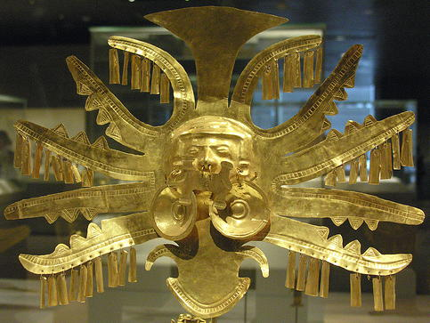
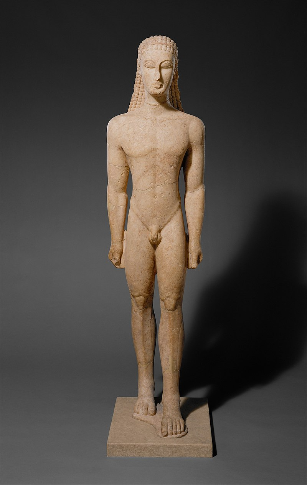

Адреса музею: П'ята авеню, 1000-й будинок Нью-Йорк, США
Час роботи:
Один з найвідоміших та найбільших мистецьких музеїв у світі, який розташований на Мангеттені.
Офіційний сайт
Колекції музею
 1864 — постанова до справи про створення художнього музею в місті Нью-Йорк.
1870 - обрано правління майбутнього музею та розпочато будівництво першого приміщення для музею.
1880 - відкрито перше приміщення музею.
1902 — нове приміщення в помпезному стилі неокласицизму на східному боці, яке стало візитівкою музею.
1924 — павільйон для експонування декоративно-ужиткового мистецтва США, що став найбільшим і найповнішим в країні.
1950-1960 — облаштування наукової бібліотеки музею, що став найбільшою збіркою видань із мистецтва в США.
1980—1984 — нові галереї для експонування живопису доби європейського Відродження, живопису XIX ст, колекції італійських бронз, меблів майстрів Франції різних епох, німецької порцеляни з колекції пана Лінського.